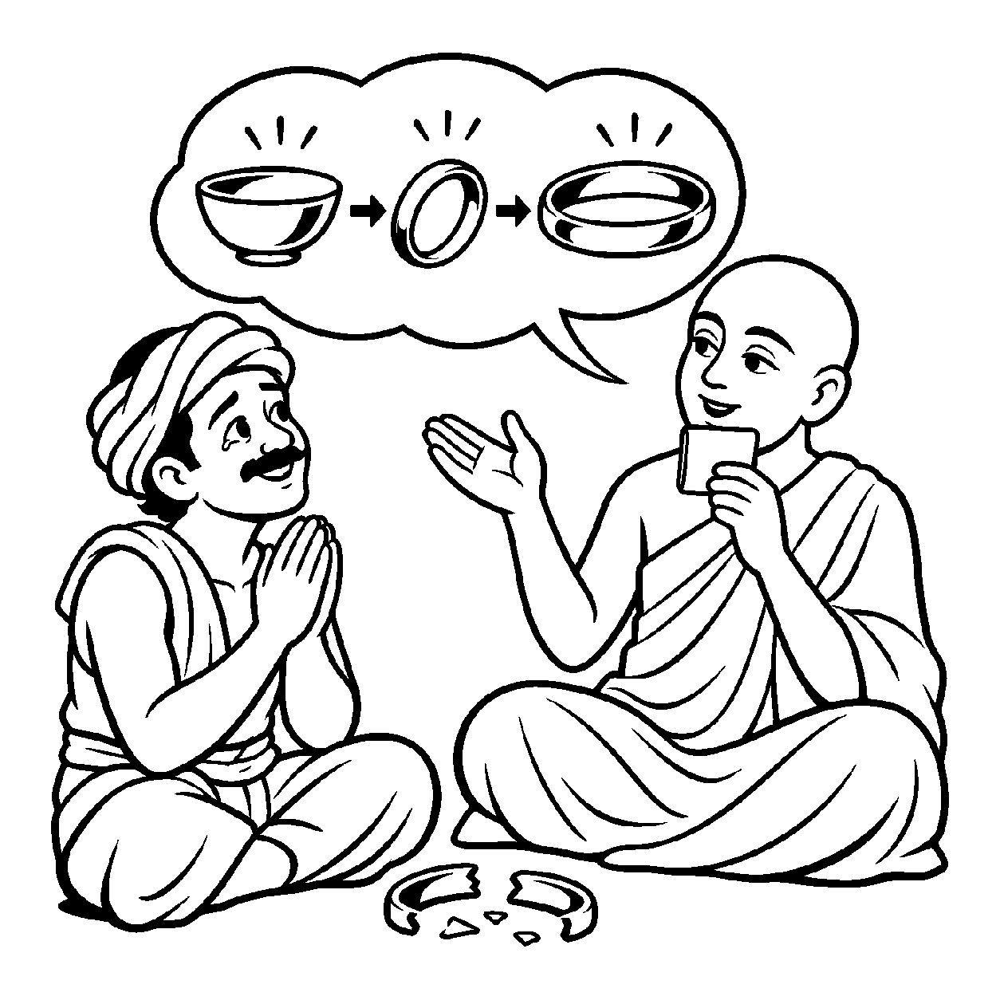

એક માળામાં ક્યારેક સોનાના મણકા પરોવાય છે, ક્યારેક સ્ફટિકના તો ક્યારેક રુદ્રાક્ષ કે મોતીના મણકા પરોવાય છે. સમય જતાં જૂના મણકા તૂટીને ખરી પડે છે અને નવા મણકા પરોવવામાં આવે છે. મણકા બદલાય છે, તૂટે છે અને નાશ પામે છે; પરંતુ જે દોરો તે તમામ મણકાઓની વચ્ચેથી પસાર થઈને તેમને એકબીજા સાથે જોડી રાખે છે, તે દોરો સદા એક જ અને અખંડ રહે છે. તેવી જ રીતે સંસારમાં એક જ ચેતન જીવ ક્યારેક નારકી બને છે, ક્યારેક તિર્યંચ બને છે, ક્યારેક મનુષ્ય તો ક્યારેક દેવ બને છે. લાખો-કરોડો જન્મ અને ગતિ-પર્યાયો બદલાવા છતાં — "આ તમામ વિવિધ પ્રાણીરૂપોને ધારણ કરનારો આત્મા સદા એક જ, શાશ્વત અને નિત્ય છે" — એમ પર્યાયોના અસંખ્ય પરિવર્તનો વચ્ચે એક ત્રિકાળી ધ્રુવ ચૈતન્યતત્ત્વને મુખ્યતાથી ગ્રહણ કરતો જે વ્યવહાર છે, તેને 'નિત્યનય' કહેવાય છે.
નિત્યનય જીવને ભયમુક્ત બનાવે છે. અજ્ઞાની જીવ શરીરના જન્મ સાથે પોતાનો જન્મ અને શરીરના મૃત્યુ સાથે પોતાનો વિનાશ માનીને થરથર કાંપે છે. પરંતુ નિત્યનય સમજાવે છે કે જેમ વસ્ત્ર બદલવાથી માણસ બદલાતો નથી, તેમ દેહ બદલાવાથી ચેતના કદી નાશ પામતી નથી. આત્મા અનાદિ છે અને અનંત છે. બાળપણ ગયું, યુવાની ગઈ અને વૃદ્ધાવસ્થા આવી, છતાં 'હું છું' એવો જે અખંડ અનુભવ સદા વહેતો રહે છે તે નિત્યનયનું પ્રત્યક્ષ પ્રમાણ છે.
આ નય સાધકને સમજાવે છે કે મૃત્યુ કેવળ જૂનું ઘર બદલવા સમાન છે; આત્મા તો અજર, અમર અને શાશ્વત સૂર્ય જેવો નિત્ય પ્રકાશમાન છે.
મણકા બદલાયે માળાના, દોરો રહે સનાત;
ભવ ભવ ભટકે જીવડો, આતમ અવિચળ જાત.
જન્મ મરણ કેવળ વસ્ત્ર છે, આતમ નિત્ય સ્વરૂપ;
નિત્યનયે દ્રષ્ટિ ઠરે, લહે શાંતિ અનૂપ.
આત્મા નિત્ય અને અવિનાશી છે એવા બોધથી મૃત્યુ અને વિનાશના ભયમાંથી મુક્ત થવું.

ધર્મપુરી નગરમાં સુમિત્ર નામનો એક ગરીબ કઠિયારો રહેતો હતો. તેના પિતાએ મરતી વખતે તેને સોનાનો એક નાનો કટોરો આપ્યો હતો. સંજોગોવશાત્ સુમિત્રને પૈસાની જરૂર પડી એટલે તેણે કટોરો સોનીને આપ્યો. સોનીએ તેને ઓગાળીને સોનાની વીંટી બનાવી આપી. થોડા વર્ષો પછી સુમિત્રે તે વીંટી ઓગળાવીને સોનાનું કડું બનાવડાવ્યું. એક દિવસ કડું તૂટી જતાં સુમિત્ર રડવા લાગ્યો: "અરેરે! મારા પિતાજીની છેલ્લી નિશાની કાયમ માટે નષ્ટ થઈ ગઈ! હવે મારી પાસે કશું જ રહ્યું નથી!" તે કડાના આકારના નાશને સોનાનો નાશ માનીને અતિશય શોકગ્રસ્ત થઈ ગયો.
તે સમયે ત્યાંથી પસાર થતા એક જ્ઞાની મુનિએ સુમિત્રને શાંત પાડ્યો અને પૂછ્યું: "સુમિત્ર! જે સોનું કટોરામાં હતું, તે જ સોનું વીંટીમાં હતું કે જુદું?" સુમિત્રે કહ્યું: "એ જ સોનું હતું." મુનિએ પૂછ્યું: "જે સોનું વીંટીમાં હતું, તે જ કડામાં હતું કે જુદું?" સુમિત્રે કહ્યું: "હા મહારાજ, એ જ સોનું હતું!" મુનિશ્રીએ કહ્યું: "તો પછી કડું તૂટ્યું તો સોનું ક્યાં ગયું? સોનું તો જેમનું તેમ અવિનાશી છે! નિત્યનયને ઓળખ! કટોરો, વીંટી અને કડું એ ક્ષણિક પર્યાયો હતી જે બદલાતી રહી, પણ સોનાનું દ્રવ્ય તો સદા નિત્ય અને અખંડ રહ્યું! તેમ જ તારો આત્મા પણ પૂર્વ ભવોમાં અનેક દેહરૂપી આકારો ધારણ કરતો આવ્યો છે, પણ ભીતર રહેલી ચૈતન્ય ધાતુ સદા અમર છે." સુમિત્રની આંખોમાંથી શોકના આંસુ ખરી પડ્યાં. પર્યાયોના વિનાશ પાછળ અવિનાશી ધ્રુવ તત્ત્વ દેખાતાં તેનો શોક શમી ગયો અને તેનું ચિત્ત પરમ વિશ્રામમાં શાંત થઈ ગયું.
જો જીવ આત્માને સર્વથા કૂટસ્થ નિત્ય માનીને પરિણામી પર્યાયોને સાવ નકારી કાઢે, તો બંધ, મોક્ષ અને સાધનાનો વ્યવહાર જ લોપ થઈ જાય છે. એક જ પાસાને પકડી રાખવાથી વસ્તુની સમગ્ર અનેકાંતમય સત્તા વિખંડિત થાય છે અને સાધક પોતાના જ એકાંગી આગ્રહના બંધનમાં ફસાઈને સાચી શાંતિ ગુમાવી બેસે છે.
આ નય પર્યાયગત પરિવર્તનો વચ્ચે પણ અખંડ નિત્ય આત્મતત્ત્વની સાક્ષી પૂરે છે, જેથી જીવ હું-પણાને ભૂલી પોતાના આત્મસ્વરૂપમાં સ્થિર થાય છે.